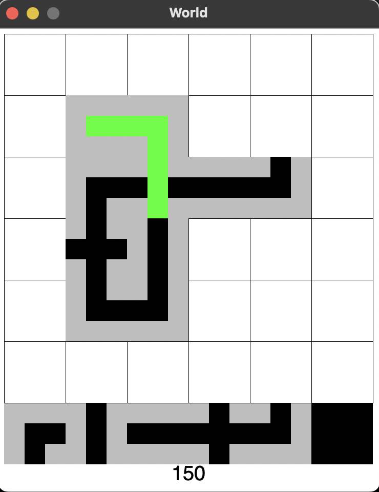
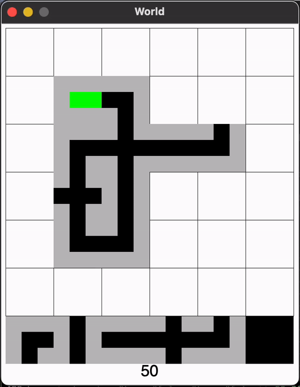

The purpose of this project is to create a simplified version of the Pipe Dream game. It is a simulation in which you connect pipes placed on a grid to allow the green goo to flow through the pipes until reaching an eventual end point from the incoming chain of pipes.


Designed and coded the grid-goo-propagate function for precise goo movement within the grid advancing the goo flow step by step - implementing an interactive user experience to allow players to propagate goo step by step
Challenges players to create intricate pipelines, each with its unique properties and behaviors developing a puzzle game with realistic gooey substance simulations, aiming for a unique and immersive gaming experience
Garnered substantial interest with positive feedback from playtesters - conducted 100+ testing sessions with an average session duration of 15 minutes